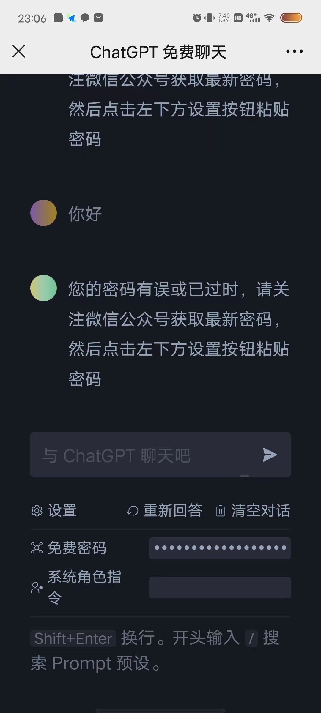
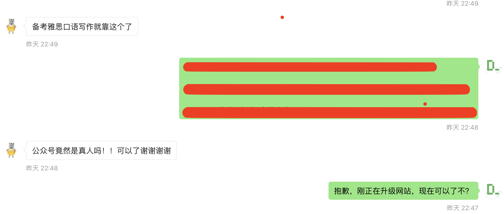
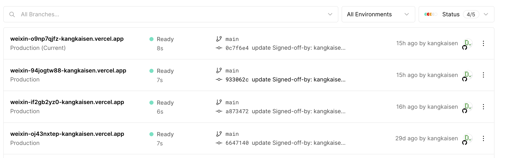

我 ChatGPT 网站一次微小升级的复盘
作者: 康凯森
日期: 2023-04-09
分类: chatgpt
背景
我自己部署的免费 ChatGPT 网站，已经稳定运行一个多月，无需翻墙，响应极速，已累计服务上万名用户。 由于自己很忙，一个多月也一直没有更新网站，昨天周六，感觉能抽出一些时间，就心血来潮想给网站加个密码访问的功能，即用户需要关注我的微信公众号，获取到密码后，才可以继续免费使用 ChatGPT。
这个功能很简单，我几分钟改完就直接推上线了，不过上线后，还是暴露了几个小问题，感觉可以以小见大，延伸总结下。
问题
1 没有做到无缝升级
就是 ChatGPT 和微信公众号的自动回复是两个 ServerLess 的服务，我应该先更新 微信公众号 的服务，让用户回复密码关键字后可以获取到密码，再更新 ChatGPT 服务开启密码限制。
我当时没管这一点的原因是，想着周六晚上10点多应该没几个人用我的服务，但是没想到加了限制后，半个小时内，就有几十个人索要密码。
这一点的启示就是：我们的线上服务应该永远保证服务一直可用，对任何服务来讲，现在的技术手段都可以做到这一点，只要你认为这一点的用户体验是重要的。
2 字符串判等没有去空格
因为需要将用户的密码和服务端的密码进行比较，所以肯定有断等的操作，我当时在写的时候，就想着要不要去空格，一开始想着严格一点，就没有去空格。
但是上线几分钟后，果然暴露了这个问题，因为用户大概率是从我的回复中复制粘贴的，而我为了让密码看起来清晰点，就两边留了空格。
这一点的启示就是：我们在做交互设计和接口设计的时候，应该想到用户最本能，最便利的操作方式是哪样的。
3 多余选项的误导

如上图所示，我在加密码设置的时候，想顺便把系统角色的这个功能也加上，让用户体验更好，但是一些用户却以为这个和密码设置一样是必选项，而不是可选项，对用户进行了误导。
这一点的启示就是：在产品设计上，我们给用户的选择要尽可能少，甚至是没有选择，每多一个选择，用户就多一个学习和理解成本，同时我们也很难保证各种选择的排列着都能给用户最佳体验。
4 客户端网页缓存
在我的服务端更新后，且用户的网页之前一直打开，没有手动刷新的情况下，用户可能找不到设置按钮，对用户更友好的方式是，在报错信息中提醒用户刷新下网页就行。
这一点我的确是没有考虑到，因为在电脑端和手机端，我都是自己重新打开或者刷新了页面，不过这也的确是个小问题。
这一点的启示就是：越完善的报错信息就会少一次用户的咨询或者工单，这对开发者和用户都会节省大量时间
感悟
1 能及时主动获取用户反馈很重要
这几个问题的快速发现其实都依赖我可以和用户快速沟通交流，能及时获取用户的反馈。 但是像数据库这种 TO B 的产品就比较困难，所以就只能依赖监控报警和各种可观测性工具，一键诊断工具。

2 云服务的运维成本显著降低
依赖 Vercel，昨天两个需要改代码的小问题，从我动手改代码到线上服务更新，都只需要 1，2分钟，让 Hot Fix 的成本极低。
如果是短时间无法修复的问题，或者是收费产品的服务，一旦发现异常，Vercel 可以回滚到任意代码的版本，如下图所示，你只需要在某个代码版本点个按钮就行。

3 ChatGPT + Vercel ———— 微创业时代真的已经到来
有了 Vercel 这种云服务商，个人开发者发布一款产品的成本极低，流程极短，开发者只需要开发好代码，之后的编译，打包，部署，域名，监控报警，Vercel 都可以帮你统统搞定，关键是 Vercel 还有很高的免费额度，当你没有一款很火的产品之前，免费额度几乎是够用的。
然后再加上 ChatGPT 强大的编码能力，只要你有一个想法，就可以先让 ChatGPT 快速帮你开发出代码，然后让 Vercel 发布到线上。 整个过程，你要付出的时间和金钱成本都极低极低。
强烈推荐大家试一下，利用 ChatGPT + Vercel，相信大家可以很快搞出很多有意思的小应用
再想想数据库
我这样一次极其微小的改动都会暴露出几个问题，而数据库产品每天的改动复杂度都是我这次改动的上万倍，所以大家就不难理解为啥绝大多数 数据库在易用性和稳定性上也有很多槽点。
升级的目的是否达到
从实际效果来看，我此次升级的目的应该是达到了，因为公众号粉丝数一天内涨粉了1百多，同时 ChaTGPT 的 API 使用费用还降低了。
《OLAP 性能优化指南》欢迎 Star&共建
欢迎关注微信公众号